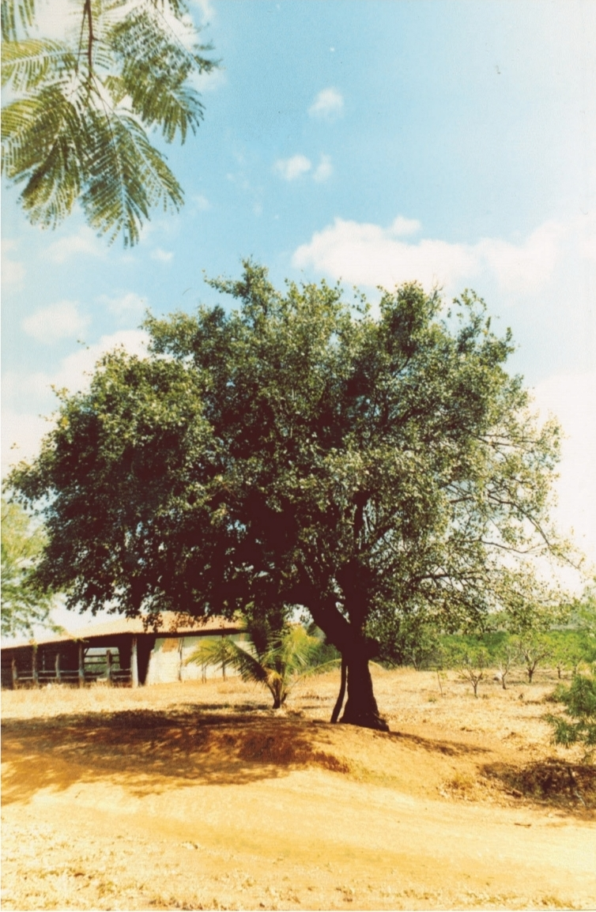
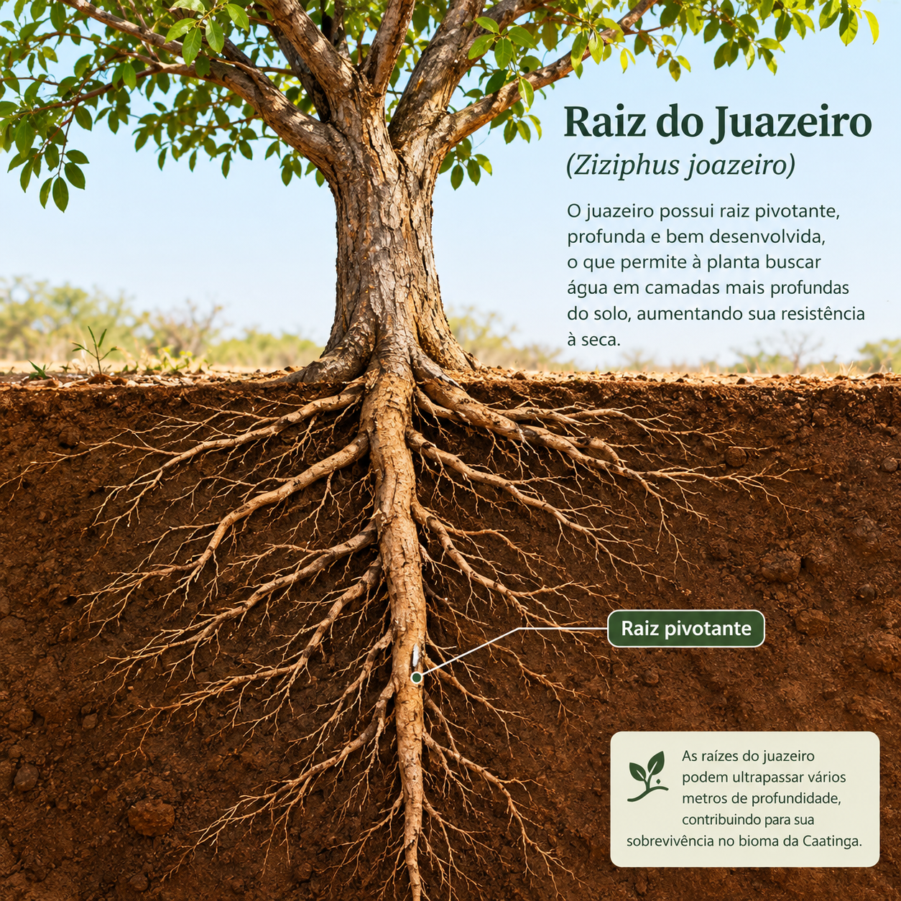
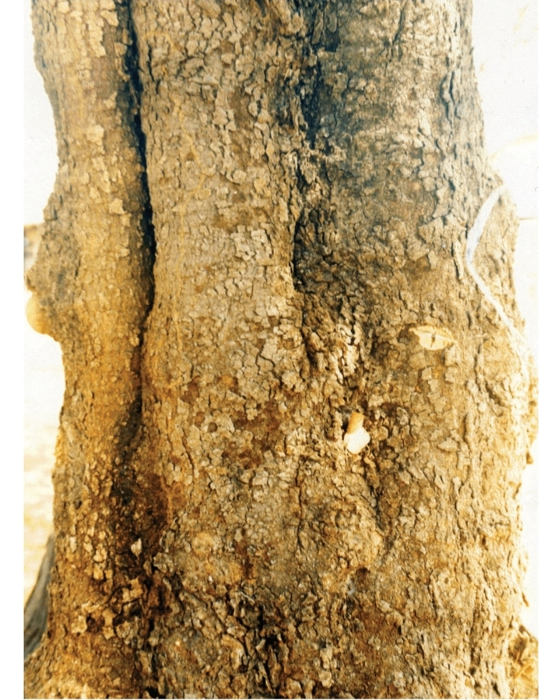
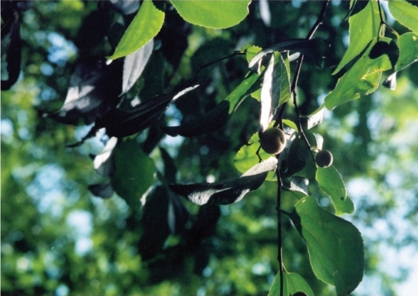
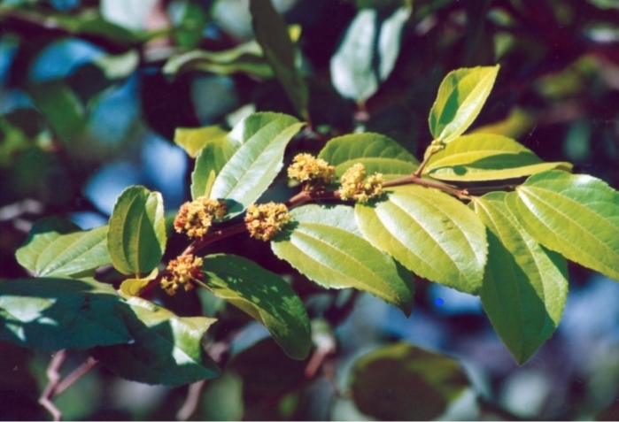
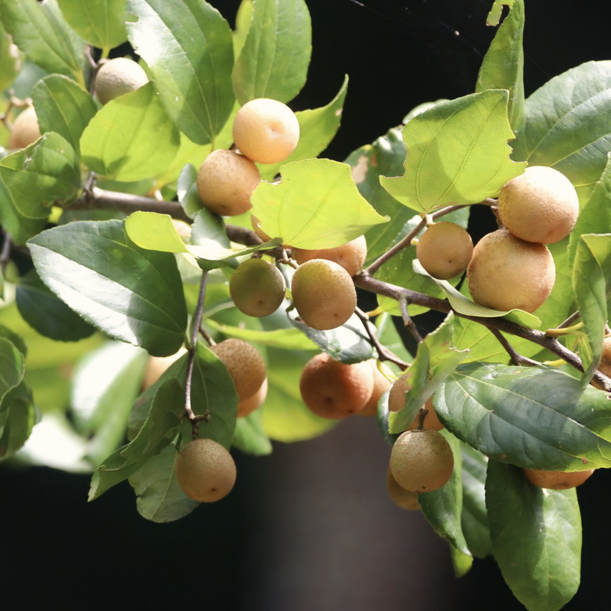
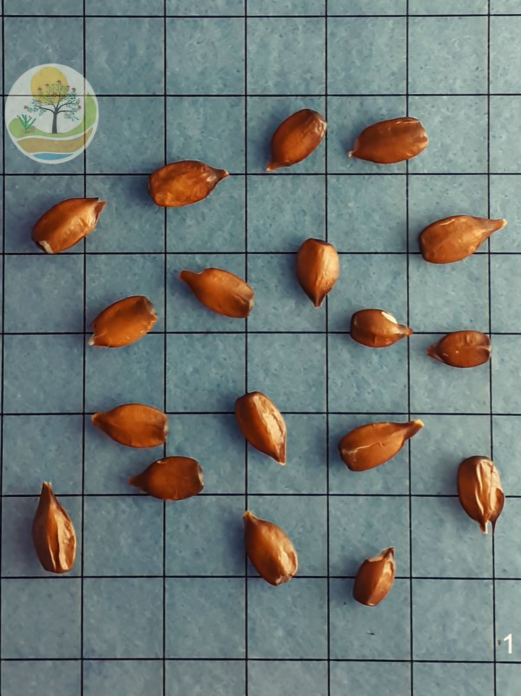
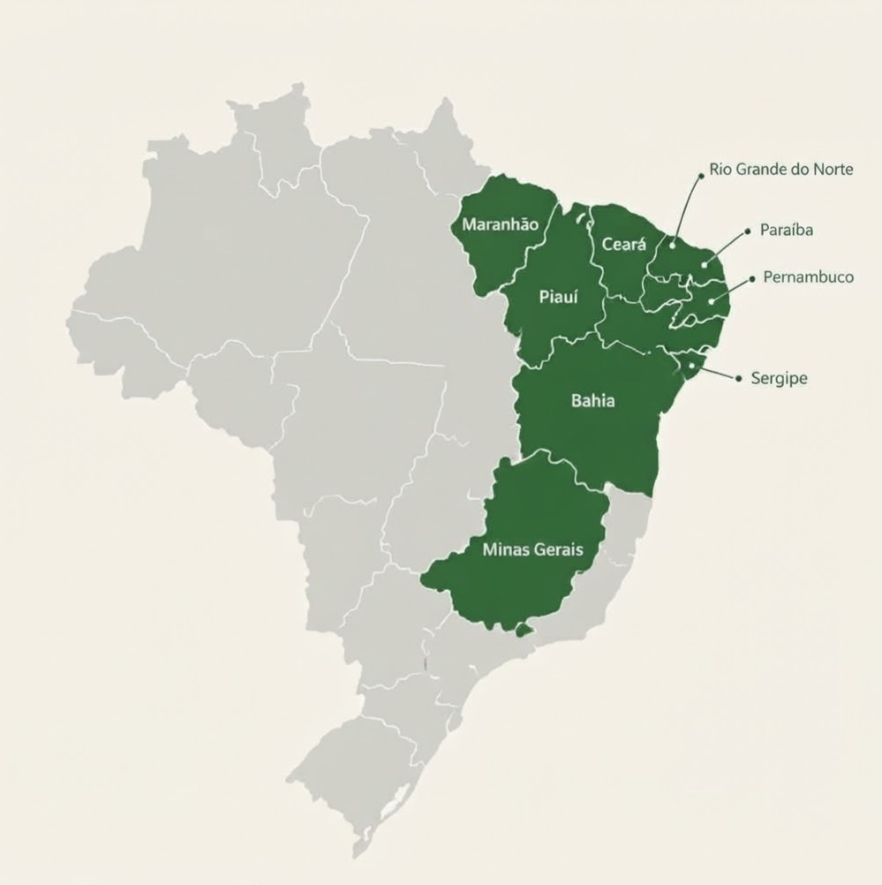
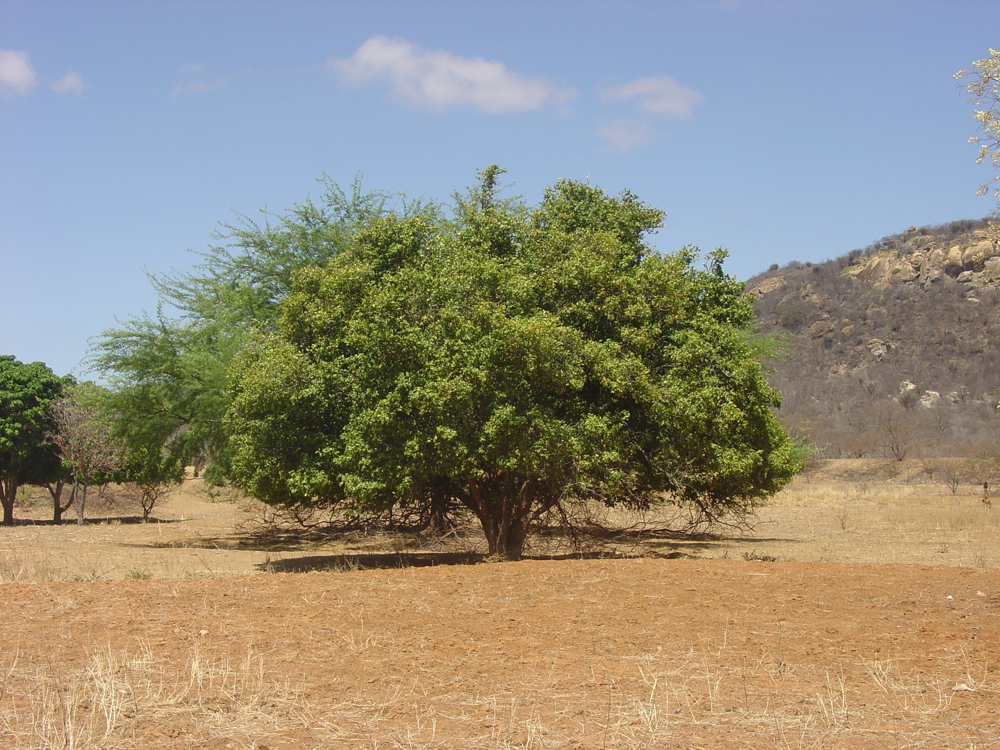

Porte
É uma árvore de porte médio, com copa ampla e densa. Exemplares adultos podem atingir aproximadamente 16 metros de altura, embora seu tamanho varie de acordo com as condições ambientais.
Uma árvore nativa do Brasil, fortemente associada à Caatinga e ao Semiárido, conhecida por sua resistência à seca, sua copa verde e sua importância ecológica, alimentar e forrageira.
Conheça a espécie ↓
VISÃO GERAL
O juá-de-boi, também conhecido como juazeiro, é uma árvore nativa do Brasil pertencente à família Rhamnaceae. É uma espécie muito característica das regiões semiáridas do Nordeste brasileiro e chama atenção pela capacidade de permanecer verde durante boa parte do período seco.
É uma árvore de porte médio, com copa ampla e densa. Exemplares adultos podem atingir aproximadamente 16 metros de altura, embora seu tamanho varie de acordo com as condições ambientais.
A copa é geralmente globosa, bastante ramificada e densa. Seus ramos podem apresentar espinhos fortes, formando uma estrutura que proporciona sombra e abrigo.
Uma das características mais marcantes é sua capacidade de enfrentar períodos secos. Seu sistema radicular amplo e profundo permite explorar a umidade disponível no solo.
As folhas são simples e alternas, geralmente ovais ou elípticas, com margem serrilhada e nervuras bem visíveis.
As flores são pequenas e amarelo-esverdeadas. Aparecem agrupadas em inflorescências e são visitadas principalmente por abelhas e outros pequenos insetos.
O fruto é uma drupa globosa, geralmente amarelada, com aproximadamente 1,5 a 2 cm. Possui polpa farinácea e mucilaginosa, de sabor doce a ácido.
Em uma paisagem onde a disponibilidade de água pode variar muito ao longo do ano, encontrar uma árvore que continua verde durante a seca representa uma característica ecológica importante.
O juazeiro consegue aproveitar a umidade disponível no solo e continua oferecendo folhas, sombra e abrigo para animais em períodos de escassez.
IDENTIDADE DA ESPÉCIE
O juazeiro é uma espécie nativa do Brasil, com ocorrência natural concentrada principalmente no Nordeste e alcançando também Minas Gerais.
Sua presença está fortemente relacionada às formações de Caatinga e a ambientes de clima sazonalmente seco.
Os nomes populares de uma planta podem mudar de acordo com a região, a cultura local e a tradição das comunidades.
Os nomes variam conforme a região e a fonte consultada. Na Bahia, por exemplo, aparecem registros de joazeiro, juá-babão e juá-de-boi.
CLASSIFICAÇÃO
A taxonomia organiza os seres vivos em grupos de acordo com suas características e relações evolutivas.
| Categoria | Classificação |
|---|---|
| Reino | Plantae |
| Divisão | Magnoliophyta |
| Classe | Magnoliopsida |
| Ordem | Rhamnales |
| Família | Rhamnaceae |
| Gênero | Ziziphus |
| Espécie | Ziziphus joazeiro Mart. |
O nome Ziziphus joazeiro é amplamente utilizado na literatura, inclusive em publicações da Embrapa. Bases botânicas atuais podem apresentar Sarcomphalus joazeiro como nome aceito.
HISTÓRIA EVOLUTIVA
Para compreender a evolução do juazeiro, é importante observar como as plantas com sementes se diversificaram. O juazeiro pertence às angiospermas, grupo caracterizado pela presença de flores e frutos.
Plantas adaptadas à vida fora da água desenvolveram estruturas que permitiram ocupar ambientes terrestres.
O desenvolvimento de tecidos condutores permitiu transportar água e substâncias pelo corpo da planta.
As sementes protegeram o embrião e aumentaram as possibilidades de sobrevivência e dispersão.
São plantas com sementes que não ficam encerradas dentro de frutos.
Possuem flores e frutos, estruturas importantes para reprodução, proteção e dispersão das sementes.
As angiospermas apresentam estruturas reprodutivas especializadas, como as flores. Os frutos também envolvem e protegem as sementes e podem facilitar sua dispersão.
A interação com diferentes polinizadores e dispersores contribuiu para a grande diversificação desse grupo.
Como angiosperma, o juazeiro apresenta flores, frutos e sementes.
Além dessas características, possui adaptações relacionadas ao ambiente semiárido, como o sistema radicular amplo e profundo e a capacidade de permanecer verde durante períodos secos.
ESTRUTURA
Cada estrutura do juazeiro desempenha funções específicas. Raízes, caule, folhas, flores, frutos e sementes trabalham em conjunto para manter a planta viva, permitir seu crescimento e garantir sua reprodução.

As raízes formam um sistema amplo e profundo. Sua principal função é absorver água e sais minerais, além de fixar a planta no solo.
No juazeiro, a profundidade das raízes possui grande importância ecológica, pois permite explorar a umidade existente em camadas mais profundas do solo.

O tronco pode ser reto ou tortuoso e apresenta ramificação intensa. Os ramos podem apresentar espinhos fortes.
A casca possui coloração cinza-escura a castanha e pode apresentar até aproximadamente 14 mm de espessura.

As folhas são simples e alternas, geralmente ovais ou elípticas, com margem serrilhada e três a cinco nervuras principais bem visíveis.
São os principais órgãos responsáveis pela fotossíntese e participam das trocas gasosas e da transpiração.

As flores são pequenas, amarelo-esverdeadas e aparecem agrupadas em inflorescências axilares.
Cada inflorescência pode reunir aproximadamente 15 a 35 flores, que podem ser visitadas por abelhas e outros pequenos insetos.

O fruto é uma drupa globosa, amarelada, com aproximadamente 1,5 a 2 cm.
Possui casca fina e polpa carnosa, farinácea e mucilaginosa. Além de proteger as sementes, participa de sua dispersão.

As sementes ficam protegidas no interior do fruto. Quando encontram condições adequadas, podem iniciar a germinação.
A espécie apresenta registro de aproximadamente 2% de poliembriônia, fenômeno em que uma semente pode originar mais de um embrião.
FUNCIONAMENTO
A fisiologia mostra como a planta funciona internamente: como obtém água, produz energia, transporta substâncias, controla sua perda de água e mantém suas atividades vitais.
Nas folhas, as células vegetais utilizam a energia da luz para transformar água e gás carbônico em compostos orgânicos, principalmente açúcares.
Os açúcares produzidos armazenam energia química e servem como matéria-prima para crescimento, manutenção dos tecidos e formação de frutos.
A água presente no solo é absorvida principalmente pelas raízes. Junto com ela entram sais minerais necessários ao metabolismo da planta.
A água e os sais minerais absorvidos pelas raízes são conduzidos pelo xilema, principalmente no sentido das raízes para as folhas.
Depois da fotossíntese, os açúcares produzidos pelas folhas precisam chegar a outras partes da planta. O floema participa desse transporte.
Os estômatos são pequenas estruturas presentes nas folhas responsáveis pelas trocas gasosas.
Quando estão abertos, facilitam a entrada de CO₂, mas também podem aumentar a perda de água por transpiração.
No juazeiro, a adaptação à deficiência hídrica envolve principalmente a capacidade de explorar água em profundidade e manter a atividade da planta durante períodos secos.
Em situações extremas de falta de água, porém, a espécie também pode perder completamente a folhagem.
CONTINUIDADE DA ESPÉCIE
O juazeiro é uma espécie monoica. Isso significa que uma mesma planta possui estruturas reprodutivas masculinas e femininas associadas às suas flores.
A reprodução sexuada depende da formação e transferência do pólen, seguida da fecundação. Depois da fecundação, desenvolvem-se fruto e sementes.
A polinização ocorre principalmente com a participação de abelhas e outros pequenos insetos.
Ao visitar as flores em busca de recursos, esses animais podem carregar grãos de pólen e transportá-los para outras flores.
A flor possui estruturas relacionadas à reprodução.
O inseto visita a flor em busca de recursos.
O pólen pode ser transportado entre flores.
Depois da reprodução, desenvolvem-se fruto e sementes.
O período de floração não é exatamente igual em todas as regiões. A literatura registra períodos diferentes conforme o estado, mostrando que a reprodução da espécie acompanha as condições ambientais locais.
Na publicação da Embrapa, por exemplo, são registrados períodos de março a julho em São Paulo, maio a junho em Pernambuco, setembro na Bahia e novembro a abril no Ceará.
A frutificação ocorre depois do desenvolvimento dos frutos. A literatura registra períodos diferentes de acordo com a região.
A dispersão ocorre principalmente por zoocoria, ou seja, com participação de animais. Caprinos, ovinos e morcegos aparecem entre os principais animais relacionados à disseminação das sementes.
RELAÇÕES COM O AMBIENTE
O juazeiro está fortemente associado à Caatinga, ao Sertão e ao Agreste nordestinos. Também pode ocorrer em outras formações vegetais.
É encontrado em regiões que apresentam períodos de deficiência hídrica e possui características que permitem enfrentar a estação seca.
Apresenta preferência por solos profundos e com boa fertilidade química, incluindo solos aluviais argilosos.
A disponibilidade de água influencia diretamente seu desenvolvimento. As raízes profundas favorecem o acesso à umidade do subsolo.
As flores são visitadas por abelhas e outros pequenos insetos, que participam da polinização.
Folhas e frutos podem servir de alimento para animais. Caprinos, ovinos e morcegos também participam da dispersão das sementes.
O juazeiro contribui para a estrutura dos ambientes onde ocorre. Sua copa fornece sombra e abrigo, suas flores oferecem recursos para insetos e seus frutos participam das cadeias alimentares e da dispersão de sementes.
ONDE É ENCONTRADO?
O juazeiro ocorre naturalmente principalmente no Nordeste brasileiro e também em Minas Gerais. Sua distribuição está fortemente relacionada à Caatinga e a outras formações vegetais de clima sazonalmente seco.

Mapa das divisões estaduais do Brasil. Os estados de ocorrência do juazeiro estão indicados na lista ao lado.
A Embrapa registra ocorrência natural de Ziziphus joazeiro nas seguintes Unidades da Federação:
BA — Bahia
CE — Ceará
MA — Maranhão
MG — Minas Gerais
PB — Paraíba
PE — Pernambuco
PI — Piauí
RN — Rio Grande do Norte
SE — Sergipe
A espécie é especialmente característica dos sertões nordestinos, ocorrendo com frequência na Caatinga, no Sertão e no Agreste.
A ocorrência indicada aqui é a distribuição natural registrada na fonte consultada. Isso não significa que a espécie esteja presente em todos os municípios desses estados.
RELAÇÃO COM A PRODUÇÃO ANIMAL
A relação do juazeiro com a pecuária é especialmente importante em regiões semiáridas, onde a disponibilidade de forragem pode diminuir durante períodos prolongados de seca.
Folhas, frutos e ramos jovens podem ser utilizados como recurso alimentar para animais, principalmente em períodos de escassez de outras plantas forrageiras.
A capacidade de permanecer verde durante períodos secos aumenta sua importância como fonte de alimento para bovinos, ovinos e caprinos.
A copa ampla e densa pode oferecer sombra para o gado e outros animais, contribuindo para o conforto térmico em ambientes quentes.
Caprinos e ovinos aparecem relacionados tanto ao consumo de partes da planta quanto à dispersão das sementes.
O juazeiro pode ser aproveitado em estratégias de arborização rural, fornecimento de sombra e integração entre vegetação e criação animal.
Sua presença durante a estação seca faz com que a espécie tenha importância especial em ambientes onde água e forragem são recursos limitantes.
A Embrapa apresenta análises bromatológicas da parte aérea do juazeiro, registrando aproximadamente 15,31% de proteína bruta e 2,56% de tanino em uma das análises citadas.
Esses valores ajudam a explicar seu interesse como recurso forrageiro, embora sua utilização na alimentação animal dependa das condições do alimento, manejo e dieta.
PROTEÇÃO DA ESPÉCIE
A retirada da vegetação nativa e as queimadas alteram os ambientes onde o juazeiro ocorre e podem dificultar sua regeneração.
Animais podem consumir mudas jovens. Por isso, áreas destinadas à regeneração precisam considerar o manejo do pastejo.
A produção de mudas e o plantio de espécies nativas podem contribuir para a recuperação de áreas degradadas.
O juazeiro reúne importância ecológica, forrageira, cultural e econômica. Preservá-lo significa também conservar relações entre vegetação, solo, água, animais e comunidades humanas.
REGISTRO VISUAL

FONTES CONSULTADAS
CARVALHO, P. E. R. Juazeiro – Ziziphus joazeiro. Colombo: Embrapa Florestas. Circular Técnica, n. 139.
CARVALHO, P. E. R. Juazeiro – Ziziphus joazeiro. In: Espécies Arbóreas Brasileiras. Brasília: Embrapa Informação Tecnológica; Colombo: Embrapa Florestas.
Materiais técnicos da Embrapa sobre o juazeiro, incluindo características morfológicas, ocorrência, floração, frutificação e utilização como recurso forrageiro.
Jardim Botânico do Rio de Janeiro. Base de dados botânicos utilizada para consulta da nomenclatura e distribuição da espécie.
Instituto Brasileiro de Geografia e Estatística. Mapas políticos e bases cartográficas do Brasil, utilizados como referência para a representação territorial.
Material fornecido para o desenvolvimento do projeto interdisciplinar de Informática e Pecuária.
Site desenvolvido para fins educativos. As informações foram organizadas a partir das fontes científicas e do material didático utilizado no projeto.